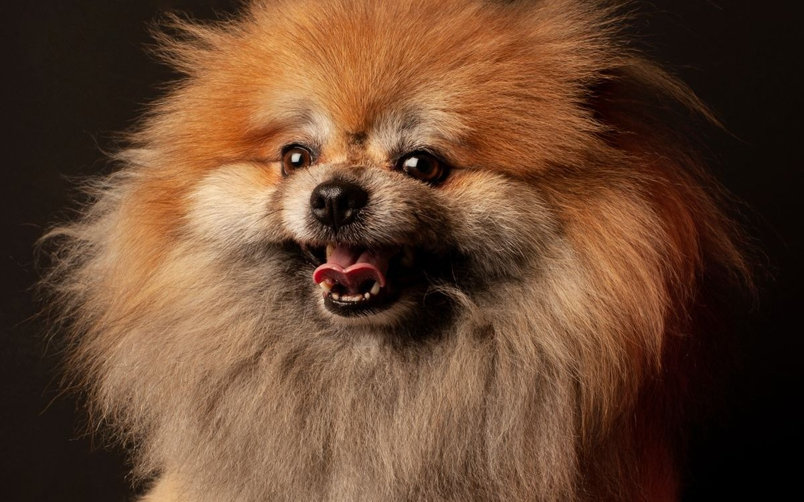

포메라니안 키우기 완벽 가이드 — 성격·수명·질병·털 관리

포메라니안은 풍성한 이중모와 여우 같은 얼굴, 명랑한 성격으로 사랑받는 소형견입니다. 다만 활발하고 잘 짖는 기질과, 소형견 특유의 기관허탈·슬개골 관리가 필요한 품종이에요. 성격부터 질병, 털 관리까지 초보 보호자가 알아야 할 내용을 정리했습니다.
한눈에 보는 포메라니안
| 크기 | 초소형견 (체중 약 2~3.5kg) |
|---|---|
| 수명 | 약 12~16년 |
| 털빠짐 | 많음 (풍성한 이중모, 환모기 관리 필요) |
| 활동량 | 중간 (명랑하고 활발) |
| 짖음 | 많은 편 (경계심 강함, 교육 필요) |
| 초보자 적합도 | 중간 (털·짖음 관리 각오 필요) |
성격과 기질
포메라니안은 작은 체구에 비해 자신감 넘치고 활발한 성격입니다. 호기심이 많고 똑똑해서 교육 습득이 빠른 편이지만, 경계심이 강해 낯선 사람·소리에 잘 짖습니다. 사회화와 짖음 교육을 일찍 시작하는 것이 중요합니다.
보호자와의 교감을 좋아하고 애교도 많습니다. 다만 자기 주장이 강한 면이 있어, 요구성 짖음에 매번 반응해주면 "짖으면 통한다"로 학습됩니다. 일관성 있는 규칙이 필요해요.
입양 전 현실 체크 (비용·시간·이웃)
포메라니안의 유지비는 사료가 아니라 털에서 갈립니다. 몸통을 미는 미용을 하지 않는 품종이라 커트 비용은 장모종보다 오히려 적게 들지만, 집에서 쓰는 빗과 청소 장비가 반드시 따라붙어요. 체중 2.5kg 성견을 기준으로 잡으면 대략 이렇습니다.
| 지출 항목 | 한 달 대략 | 설명 |
|---|---|---|
| 사료 | 2~3만 원 | 하루 50~70g 수준의 초소형견용(사료 열량에 따라 차이) |
| 목욕·위생 미용 | 2~4만 원 | 미용실 6~8주마다 3~6만 원, 사이사이 목욕은 집에서 |
| 예방·검진 | 3~4만 원 | 접종과 심장사상충, 연 1회 검진을 12개월로 나눈 값 |
| 청소 소모품 | 1~2만 원 | 털 날림 탓에 필터·롤테이프 소모가 큽니다 |
| 합계 | 8~13만 원 | 중성화와 기초 접종은 첫해에 따로 몰립니다 |
처음 한 번 드는 비용도 있습니다. 핀 브러시·슬리커·언더코트 레이크·콤을 갖추는 데 3~5만 원, 목줄 대신 쓸 가슴줄이 2~3만 원 정도예요. 이 둘은 아끼면 결국 미용비와 병원비로 돌아오는 항목이라 처음부터 제대로 사는 편이 낫습니다.
하루에 들어가는 돌봄 시간
평소에는 빗질 10분, 산책 20~40분, 실내 놀이 15분, 바닥 청소 10분 정도로 한 시간 안팎입니다. 변수는 봄과 가을의 환모기예요. 이때는 빗질이 하루 20~30분으로 늘고 청소도 매일 해야 해서 체감 부담이 평소의 두 배 가까이 됩니다. 1년에 두 번, 각각 3~4주쯤 이런 기간이 온다고 미리 계산에 넣어두세요.
아파트·원룸과 이웃 문제
2~3.5kg이라 공간은 걸림돌이 아닙니다. 진짜 변수는 소리와 털이에요. 잘 짖는 기질이라 벽이 얇거나 복도식인 건물에서는 민원으로 번질 수 있고, 현관 앞 발소리에 반응하는 개체가 많습니다. 창가에 밖이 훤히 보이는 자리를 만들어 두면 스스로 짖을 거리를 찾아내므로, 그 자리만 시야를 가려줘도 소음이 눈에 띄게 줄어듭니다. 가족 중에 비염이나 알레르기가 있다면 이중모의 털 날림도 미리 감안해야 합니다.
혼자 두는 시간에 대한 내성
독립적인 편이라 혼자 있는 것 자체는 비교적 잘 견딥니다. 문제는 심심하면 짖는 것으로 에너지를 푼다는 점이에요. 낮에 8시간쯤 비운다면 나가기 전 15분 놀아 에너지를 빼고, 하루치 사료 일부를 노즈워크 매트나 퍼즐 장난감에 나눠 담아두고, 라디오처럼 일정한 소리를 틀어 바깥 소음을 덮는 세 가지를 묶어서 하면 훨씬 안정적입니다.
주의해야 할 질병
- 기관허탈 — 목의 기관이 눌려 "꺽꺽" 거위 울음 같은 기침을 유발합니다. 목줄 대신 가슴줄(하네스)을 쓰고 비만을 예방하는 것이 핵심 관리입니다.
- 슬개골 탈구 — 소형견 공통 질환. 미끄럼방지·점프 차단 필수. (슬개골 탈구 대처법)
- 탈모증(포스트 클리핑 탈모 등) — 이중모를 바짝 밀면 털이 제대로 다시 자라지 않을 수 있습니다. 밀기보다 빗질 관리를 권합니다.
- 치주 질환 — 소형견 공통. 양치 습관이 중요합니다.
- 저혈당 — 어린 자견은 끼니를 거르지 않도록 관리하세요.
나이대별 관리 포인트
자견기 (생후 12개월까지)
생후 4~8개월 무렵 솜털이 빠지고 성견 털이 올라오면서 목과 몸통이 듬성듬성해 보이는 시기가 옵니다. 흔히 "퍼피 어글리"라 부르는 정상적인 과정이니, 놀라서 털을 밀거나 영양제를 급하게 바꿀 일은 아닙니다. 이 시기에 정작 해둬야 할 것은 소리 사회화예요. 초인종, 노크, 청소기 소리를 아주 작은 볼륨부터 간식과 함께 들려주는 연습이 나중의 짖음 문제를 크게 줄여줍니다. 자견은 저혈당에 약하므로 하루 3~4회로 나눠 먹이고, 소파에서 뛰어내리는 습관이 붙기 전에 막아주세요.
성견기 (1~7세)
이 구간의 관찰 포인트는 기침입니다. 흥분했을 때나 줄이 당겨졌을 때 거위 울음 같은 "꺽꺽" 소리가 반복된다면 기관 쪽 부담을 의심할 수 있어요. 한두 번이 아니라 특정 상황마다 되풀이된다면 진료를 받아보는 것이 좋습니다. 체중은 100g 단위로 관리해야 하는 체급이라 간식은 하루 열량의 10% 안쪽으로 묶고, 한 달에 한 번 재서 기록하세요. (비만도 자가진단)
노령기 (8세 이후)
포메라니안에서 비교적 특징적으로 나타나는 변화가 몸통의 대칭적인 탈모입니다. 머리와 발은 멀쩡한데 목·등·꼬리 쪽 털만 서서히 얇아지는 형태로, 원인이 하나로 정리되지 않아 진단에 시간이 걸리는 편이에요. 노령기에 눈에 띄는 경우가 많지만 이르면 어린 성견 때 시작되기도 하니, 나이가 적다고 배제하지는 마세요. 문제는 갑상선이나 부신 질환처럼 치료가 필요한 병에서도 비슷하게 보인다는 점입니다. 털이 빠지면서 물을 부쩍 많이 마시거나 배가 볼록해지는 변화가 함께 있다면 반드시 검사를 받아야 합니다. 심장·기관·치아까지 겹치는 시기이므로 6개월~1년 간격의 정기 검진을 권합니다.
이중모 관리 실전
포메라니안의 털은 빳빳한 겉털과 촘촘한 속털의 이중 구조입니다. 이 속털이 공기층을 만들어 더위와 추위를 함께 막아주는데, 죽은 속털이 빠지지 않고 쌓이면 그 기능이 정반대로 뒤집힙니다. 열이 빠져나가지 못하고 피부가 습해지죠. 그래서 이중모 관리란 결국 "속털을 제때 빼주는 일"입니다.
도구와 빗질 방법
핀 브러시로 겉털을 정리하고, 슬리커 브러시나 언더코트 레이크로 속털을 빼냅니다. 털이 누운 방향대로 위에서 쓸어내리면 손끝 감촉만 좋아질 뿐 속털은 그대로예요. 한 손으로 털을 역방향으로 들어 올려 뿌리를 드러낸 다음, 아래층부터 조금씩 내려오며 빗는 것이 정석입니다. 평소 주 2~3회, 환모기에는 매일이 기준이에요.
특히 잘 뭉치는 부위
- 목도리(러프) — 털이 가장 두꺼운 곳. 턱 밑에서 가슴으로 이어지는 안쪽이 잘 뭉칩니다.
- 귀 뒤와 귀 아래 — 털이 가늘어 마찰만으로도 엉킵니다.
- 뒷다리 안쪽과 엉덩이 — 앉을 때 눌려 판처럼 굳기 쉬운 자리입니다.
- 가슴줄이 닿는 겨드랑이 — 매일 채운다면 벗긴 뒤 한 번씩 훑어주세요.
목욕과 미용
목욕은 3~4주에 한 번이면 충분합니다. 속털이 촘촘해 물이 잘 스며들지 않고 잘 마르지도 않는 것이 함정이라, 속까지 완전히 말리지 않으면 피부가 짓무를 수 있습니다. 드라이 시간이 부담스럽다면 목욕과 드라이만 맡기는 서비스를 이용해도 좋아요. 미용실에서는 발바닥·항문 주변·귀 주변 위생 미용만 6~8주 간격으로 받고, 몸통은 가위로 실루엣만 다듬는 선에서 끝내는 것이 안전합니다. 그사이 발바닥 패드 사이 털이 자라 바닥에서 미끄러지면 집에서 짧게 정리해 주세요. 미끄러짐은 그대로 무릎 부담으로 이어집니다.
일상 관리 (식이·운동)
식이
작은 체구라 비만이 기관허탈·슬개골에 모두 악영향을 줍니다. 적정 급여량을 계산기로 확인하고 간식을 절제하세요.
운동
하루 20~40분 산책이 적당합니다. 여름엔 이중모라 더위에 약하니 열사병 관리에 유의하세요.
초보 보호자가 자주 하는 실수
- 여름이라고 짧게 미는 것 — 가장 흔하고 되돌리기도 가장 어려운 선택입니다. 속털까지 밀면 체온 조절을 돕던 공기층이 사라져 더위를 오히려 더 타고, 털이 예전처럼 돌아오지 않는 경우도 있습니다. 시원하게 해주고 싶다면 미는 대신 속털을 빼주세요.
- 목줄로 산책하기 — 줄이 당겨질 때 힘이 그대로 목에 실립니다. 이 품종은 첫 산책부터 가슴줄을 기본으로 잡아 주세요.
- 겉털만 빗고 넘어가기 — 겉은 반질반질한데 피부에 붙은 속털이 판처럼 굳어 있는 경우가 정말 많습니다. 그 아래는 통풍이 안 돼 붉어지거나 진물이 생기기도 해요. 빗질 뒤 손가락으로 털을 갈라 피부색을 직접 확인하는 습관을 들이세요.
- 짖을 때 큰 소리로 제지하기 — 보호자가 소리를 높이면 개는 "같이 짖는다"로 받아들여 오히려 신이 납니다. 조용해진 순간을 잡아 보상하는 쪽이 훨씬 빠릅니다.
짖음 교육과 사회화
포메라니안은 머리가 좋고 동작 학습이 빠릅니다. 5분짜리 짧은 훈련을 하루 두세 번 나눠 하는 방식이 잘 맞고, "앉아" 같은 기본 동작보다 손 타깃, 방석 위에서 기다리기, 이름 부르면 오기처럼 생활에서 바로 쓰이는 행동을 먼저 가르치는 편이 효율적이에요. 반면 자기 확신이 강한 기질이라, 작다는 이유로 규칙 없이 키우면 요구가 점점 커집니다.
짖음은 종류부터 구분하기
짖음 교육이 잘 안 되는 이유는 대개 원인이 다른 짖음에 같은 방법을 쓰기 때문입니다. 최소 세 가지로 나눠서 접근해 보세요. (짖음 교육 자세히 보기)
- 경계 짖음 (초인종·발소리·창밖) — 자극 자체를 줄이는 것이 먼저입니다. 창가 시야를 가리고, 소리는 아주 낮은 볼륨부터 간식과 짝지어 익숙하게 만듭니다.
- 요구 짖음 (간식·관심·안아달라) — 반응하는 순간 강화됩니다. 눈도 마주치지 않고 기다렸다가, 조용해진 뒤에 원하는 것을 주세요.
- 흥분 짖음 (귀가·손님) — 이미 흥분한 뒤에는 말이 통하지 않습니다. 미리 놀아서 에너지를 빼두고, 귀가 직후 1~2분은 무반응으로 열기를 식히는 편이 낫습니다.
몸집이 작아서 생기는 사회화 문제
큰 개 앞에서 유난히 짖는다면 용감해서가 아니라 무서워서인 경우가 많습니다. 이때 억지로 붙여 인사시키면 공포만 커져요. 짖지 않고 바라볼 수 있는 거리까지 떨어져서 구경만 하다 돌아오는 연습을 반복하며, 그 거리를 조금씩 좁혀가야 무리가 없습니다. 번쩍 안아 올려 피하는 것도 반복되면 "안기면 해결된다"로 학습되니, 되도록 네 발로 선 채 상황을 지나가게 해주세요.
이런 분께 잘 맞아요
- 활발하고 표현력 있는 소형견을 원하는 분
- 규칙적인 빗질과 짖음 교육에 시간을 낼 수 있는 분
- 이웃 소음 배려를 위해 짖음 교육을 꾸준히 할 수 있는 분
자주 묻는 질문 (FAQ)
Q. 기관허탈이 걱정되는데 예방할 수 있나요?
완전한 예방은 어렵지만, 목줄 대신 가슴줄 사용, 비만 예방, 흥분 시 진정시키기 등으로 부담을 크게 줄일 수 있습니다. 거위 울음 같은 기침이 잦으면 진료를 받으세요.
Q. 털을 짧게 밀어주고 싶은데 괜찮을까요?
이중모를 바짝 미는 것은 권장하지 않습니다. 탈모증 위험이 있어요. 위생 미용(발바닥·항문 주변) 정도만 하고, 몸통은 빗질로 관리하는 것이 안전합니다.
Q. 짖음이 너무 심해요.
경계심이 강한 품종이라 사회화와 짖음 교육이 필요합니다. 짖을 때 반응해주기보다, 조용할 때 보상하는 방식으로 일관되게 교육하세요.